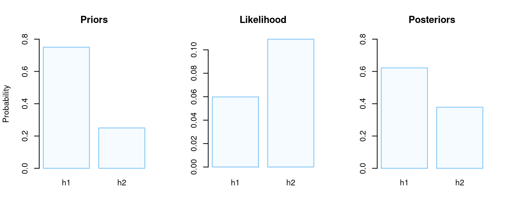
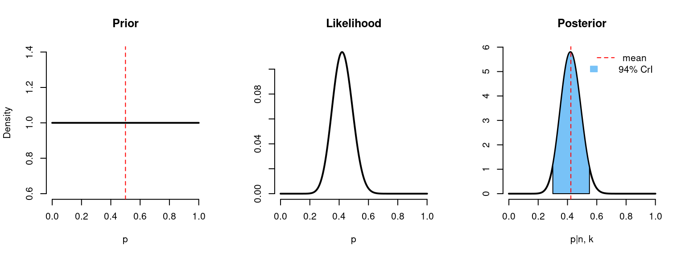
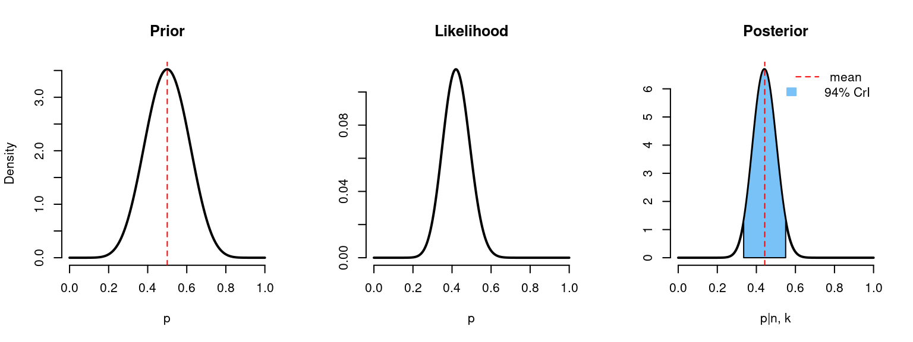
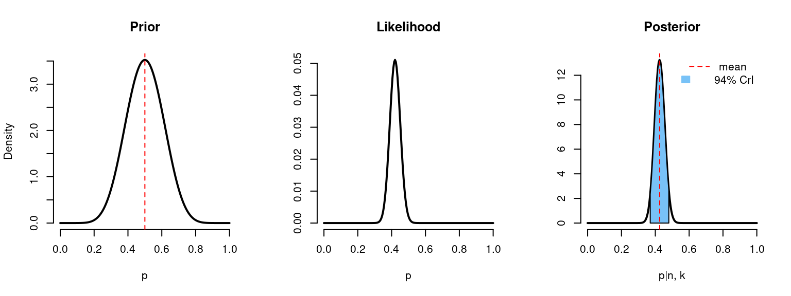

Bayesian Approach
Distinct Hypotheses
Now it is the turn of the Bayesian approach. Under this framework, we can specify two distinct hypotheses and check which one is more likely to be true.
- \(H_1\): the probability of side effects is 50%, \(p=0.5\);
- \(H_2\): the probability of side effects is 40%, \(p=0.4\);
We are going to apply the Bayes rule to calculate the posterior probability after we observed the data.
\[\scriptsize P(\text{Model}|\text{Data}) = \frac{P(\text{Data|Model}) \cdot P(\text{Model})}{P(\text{Data})}\]
- \(P(\text{Data|Model})\) is the likelihood, or probability that the observed data would happen given that model (hypothesis) is true.
- \(P(\text{Model})\) is the prior probability of a model (hypothesis).
- \(P(\text{Data})\) is the probability of a given data. It is also sometimes referred to as normalizing constant to assure that the posterior probability function sums up to one.
- \(P(\text{Model}|\text{Data})\) is the posterior probability of the hypothesis given the observed data.
As we’ve said at the beginning, in previous studies side effects were observed at a chance level, so we may put more “weight” on a prior for the such hypothesis. For example,
Priors:
- \(\scriptsize P(H_1) = 0.75\)
- \(\scriptsize P(H_2) = 0.25\)
Note that the prior probability mass function has to sum up to 1.
Likelihood:
\[\scriptsize \begin{align*} P(k = 21 | H_1 \text{ is true}) &= \binom{n}{k} \cdot P(H_1)^k \cdot (1-P(H_1))^{n-k} \\ &= \binom{50}{21} \cdot 0.5^{21} \cdot (1-0.5)^{50-21} \\ &= 0.0598 \end{align*}\]
\[\scriptsize \begin{align*} P(k = 21 | H_2 \text{ is true}) &= \binom{n}{k} \cdot P(H_2)^k \cdot \left( 1-P(H_2) \right) ^{n-k} \\ &= \binom{50}{21} \cdot 0.4^{21} \cdot (1-0.4)^{50-21} \\ &= 0.109 \end{align*}\]
Posteriors:
\[\scriptsize P(H_1 \text{ is true|}k = 21) = \frac{P(k = 21 | H_1 \text{ is true}) \cdot P(H_1)}{P(\text{k = 21})}\]
\[\scriptsize P(H_2 \text{ is true|}k = 21) = \frac{P(k = 21 | H_2 \text{ is true}) \cdot P(H_2)}{P(\text{k = 21})}\]
\[\scriptsize \begin{align*} P(k=21) &= P(k = 21 | H_1 \text{ is true}) \cdot P(H_1) + P(k = 21 | H_2 \text{ is true}) \cdot P(H_2) \\ &= 0.0598 \cdot 0.75 + 0.109 \cdot 0.25 \\ &= 0.0721 \end{align*}\]
- \(\scriptsize P(H_1 \text{ is true|}k = 21) = 0.622\)
- \(\scriptsize P(H_2 \text{ is true|}k = 21) = 1 - P(H_1 \text{ is true|}k = 21) = 0.378\)
As we can see, the probability of the second hypothesis \(\big( p = 40\% \big)\) equals 37.8%, whereas the probability of the first hypothesis \(\big( p = 50\% \big)\) equals 62.2%.
If we want to check if there is enough evidence against one of the hypotheses, we can also use the Bayes factor2.
{{% alert note %}} The Bayes factor is a likelihood ratio of the marginal likelihood of two competing hypotheses, usually a null and an alternative. The Bayes factor aims to quantify the support for a model over another, regardless of whether these models are correct. {{% /alert %}}
\[\scriptsize \begin{align*} \text{BF}(H_2:H_1) &= \frac{\text{Likelihood}_2}{\text{Likelihood}_1} \\ &= \frac{P(k = 21 | H_2 \text{ is true})}{P(k = 21 | H_1 \text{ is true})} \\ &= \frac{\frac{P(H_2 \text{ is true}|k=21) P(k=21)}{P(H_2\text{ is true)}}}{\frac{P(H_1 \text{ is true}|k=21) P(k=21)}{P(H_1\text{ is true)}}} \\ &= \frac{\frac{P(H_2 \text{ is true}|k=21)}{P(H_1\text{ is true}|k=21)}}{\frac{P(H_2)}{P(H_1)}} \\ &= \frac{\text{Posterior Odds}}{\text{Prior Odds}} \end{align*}\]
\[\scriptsize \text{BF}(H_2:H_1)= \frac{\frac{0.646}{0.354}}{\frac{0.5}{0.5}} \approx 1.82\]
To interpret the value we can refer to Harold Jeffreys interpretation table:

Hence we can see there is not enough supporting evidence for \(H_2\) (that the side effects probability is 40%).
priors <- list(h1 = 0.75, h2 = 0.25)
model <- list(h1 = 0.5, h2 = 0.4)
likelihood <- list(
h1 = dbinom(x = k, size = n, prob = model$h1),
h2 = dbinom(x = k, size = n, prob = model$h2))
norm_const <- likelihood$h1 * priors$h1 + likelihood$h2 * priors$h2
posterior <- list(
h1 = likelihood$h1 * priors$h1 / norm_const,
h2 = likelihood$h2 * priors$h2 / norm_const
)
BF <- likelihood$h2 / likelihood$h1
cat(paste0("Bayes Factor (H2:H1) = ", round(BF,2)))# Bayes Factor (H2:H1) = 1.82par(mfrow=c(1,3))
barplot(
unlist(priors), col = light_blue,
ylab = "Probability", main = "Priors",
ylim = c(0, 0.8), border = dark_blue)
barplot(
unlist(likelihood), col = light_blue,
main = "Likelihood", border = dark_blue)
barplot(
unlist(posterior), col = light_blue,
main = "Posteriors", ylim = c(0,0.8),
border = dark_blue)
How can we interpret these results? Initially, we believed (based on prior knowledge/intuition/solar calendar/etc.) that the probability of side effects are around the chance level and we applied this by putting more “weight” or prior probability on the first hypothesis. After we have seen the data (21 out of 50 subjects with side effects) we updated our beliefs and got posterior probabilities that were slightly shifted from our initial beliefs. Now the probability that the probability of side effects is around the chance level is around 62% (compared to the initial 75%). But according to the Bayes factor, there is not enough evidence to claim that any of these two hypotheses is more likely to be true.
One might argue that the Bayesian factor is not really part of the Bayesian statistics or it does not represent the whole picture of it. So let us explore what other features of Bayesian statistics exist.
Beta-Binomial Distribution and Credible Intervals
So far we have specified two distinct hypotheses \(H_1\) and \(H_2\). But also we could define the whole prior probability distribution function of an unknown parameter \(p\).
Let’s assume that we have no prior information about the probability of side effects and \(p\) can take any value on the \([0,1]\) range. Or in other words \(p\) follows a uniform distribution \(p \sim \text{Unif}(0,1)\). We are going to replace the Uniform distribution with Beta distribution \(\text{Beta}(\alpha,\beta)\) with parameters \(\alpha=1\), \(\beta=1\), \(p \sim \text{Beta}(1,1)\), which is exactly like the uniform. It just makes calculations (and life) easier since Beta and Binomial distribution3 form a conjugate family4.
Now, in order to find the posterior distribution we can just update the values of the Beta distribution:
- \(\scriptsize \alpha^* = \alpha + k\)
- \(\scriptsize \beta^* = \beta + n - k\)
The expected value of the Beta distribution is:
\[\scriptsize \mathbb{E}(x) = \frac{\alpha}{\alpha+\beta}\]
To summarize:
- Prior: \(\scriptsize p \sim \text{Beta}(\alpha=1,\beta=1)\)
- Likelihood: \(\scriptsize \mathcal{L}( p ) \sim \text{Binom}(n, p)\)
- Posterior: \(\scriptsize p | n,k \sim \text{Beta}(\alpha^*=\alpha + k,\beta^* = \beta + n - k)\)
After we find the posterior distribution we can derive the Bayesian credible interval (CrI) which will tell us the probability of our unknown parameter \(P\). Usually, it is found as the narrowest interval with the desired area (like 0.95).
Code
binom_beta <- function(a, b, n, k){
x <- seq(from = 0, to = 1, by = 0.005)
# prior values
mean_prior <- a/(a+b)
prior <- dbeta(x = x, shape1 = a, shape2 = b)
likelihood <- dbinom(x = k, size = n, prob = x)
# posterior values
a_new <- a + k
b_new <- b + n - k
mean_posterior <- a_new / (a_new+b_new)
posterior = dbeta(x = x, shape1 = a_new, shape2 = b_new)
# 94% credible interval
lwr <- qbeta(p = 0.03, shape1 = a_new, shape2 = b_new)
uppr <- qbeta(p = 0.97, shape1 = a_new, shape2 = b_new)
l <- min(which(x >= lwr))
h <- max(which(x <= uppr))
par(mfrow=c(1,3))
plot(
x, prior, type = "l", lwd = 2, frame.plot=FALSE,
main = "Prior", ylab = "Density", xlab = "p")
abline(v = mean_prior, lty = 2, lwd = 1, col = "red")
plot(
x, likelihood, type = "l", lwd = 2, frame.plot=FALSE,
main = "Likelihood", ylab = "", xlab = "p")
plot(
x, posterior, type = "l", lwd = 2, frame.plot=FALSE,
main = "Posterior", ylab = "", xlab = "p|n, k")
polygon(
c(x[c(l, l:h, h)]),
c(0, posterior[l:h], 0),
col = dark_blue,
border = 1)
abline(v = mean_posterior, lty = 2, lwd = 1, col = "red")
legend(
"topright", bty = "n",
legend = c("mean", "94% CrI"),
col = c("red", NA),
lty = c(2, NA),
fill = c("red", dark_blue),
border = c(NA,dark_blue),
density = c(0, NA),
x.intersp=c(1,0.5)
)
cat(paste0("n = ", n, "\n"))
cat(paste0("k = ", k, "\n"))
cat(paste0("Prior mean: ", round(mean_prior, 3), "\n"))
cat(paste0("Posterior mean: ", round(mean_posterior, 3), "\n"))
cat(paste0("94% credible interval: [", round(lwr, 3), ", ", round(uppr, 3), "]", "\n"))
}binom_beta(a=1, b=1, n=n, k=k) 
# n = 50
# k = 21
# Prior mean: 0.5
# Posterior mean: 0.423
# 94% credible interval: [0.298, 0.553]{{% alert note %}} Quiz Question #3. What can we say according to this CrI? Probability that the true value \(p\) is in the [0.298, 0.553] range is …
🅰 95%, \(\text{P} \left( p \in [0.298, 0.553] = 95\% \right)\)
That is correct!
🅱 100%, \(\text{P} \left( p \in [0.298, 0.553] = 100\%\right)\)
That is wrong!
🅲 0, \(\text{P} \left( p \in [0.298, 0.553] = 0\right)\)
That is wrong!
🅳 either 0 or 100%, \(\text{P} \left( p \in [0.298, 0.553] = \{ 0, 100\% \}\right)\)
That is wrong!
{{% /alert %}}
At first, we knew nothing about our parameter \(p\), it could be any value from 0 to 1 with the expected value of 0.5 (prior). After we got 21 out of 50 subjects with side effects we could calculate the probability of obtaining such results under each value of \(p\) in the \([0,1]\) range (likelihood). And finally, we were able to update our probability distribution function to get the posterior probabilities. We see, that given the data, the expected value for the \(p\) is 0.42. The real value of \(p\) is in the range \([0.298, 0.553]\) with the probability of 95% (CrI).
However, flat priors are also called non-informative and they don’t fully match the idea of Bayesian updating. In the example research question, we have said that the probability of side effects is believed to be at a chance level based on the previous data. We can use this information for the prior probability by choosing values \(\alpha = \beta = 10\). In this case, we put more “weight” around the chance level probability.
binom_beta(a=10, b=10, n=n, k=k)
# n = 50
# k = 21
# Prior mean: 0.5
# Posterior mean: 0.443
# 94% credible interval: [0.334, 0.555]With the relatively large data, posterior distribution relies more on a likelihood, rather than a prior probability distribution. As we can see, posterior distribution has not shifted that much, meaning the priors didn’t have so much weight compared to likelihood.
Now imagine that we have 5 times more observations (with the same ratio 0.42):
binom_beta(a=10, b=10, n=n*5, k=k*5)
# n = 250
# k = 105
# Prior mean: 0.5
# Posterior mean: 0.426
# 94% credible interval: [0.37, 0.483]The shape of the posterior distribution looks more like the shape of the likelihood and now the credible interval became narrower, meaning that we have decreased uncertainty about the unknown parameter \(p\).
94% credible intervals may look like a weird choice. But it does not really matter what interval we are choosing (e.g. 95%, 94%, 89%), since it doesn’t have any special meaning (like Frequentists’ CI has). It is just used as an overview of the distribution, but still, to get the full sense of results, Bayesian would use the whole distribution and not just estimates such as mean, quantiles, etc.